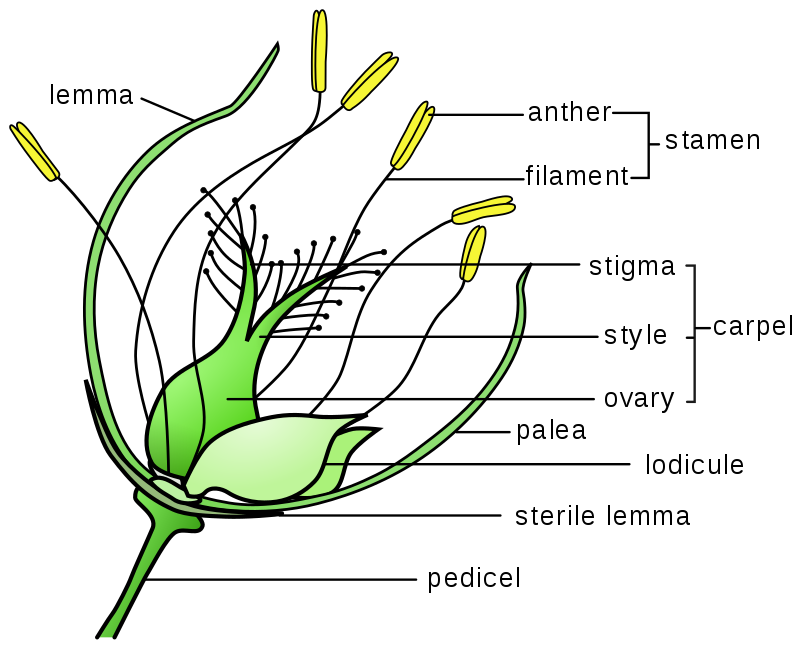

From Wikipedia, the free encyclopedia
The Flowering plants, also known as angiosperms,Angiosperms[5][6] or Magnoliophyta,[7] are the most diverse group of land plants, with 64 orders, 416 families, approximately 13,164 known genera and c. 369,000 known species.[8] Like gymnosperms, angiosperms are seed-producing plants. However, they are distinguished from gymnosperms by characteristics including flowers, endosperm within the seeds, and the production of fruits that contain the seeds. Etymologically, angiosperm means a plant that produces seeds within an enclosure; in other words, a fruiting plant. The term comes from the Greek words angeion ("case" or "casing") and sperma ("seed"). The ancestors of flowering plants diverged from gymnosperms in the Triassic Period, 245 to 202 million years ago (mya), and the first flowering plants are known from 160 mya. They diversified extensively during the Early Cretaceous, became widespread by 120 mya, and replaced conifers as the dominant trees from 100 to 60 mya.

Angiosperms differ from other seed plants in several ways, described in the table below. These distinguishing characteristics taken together have made the angiosperms the most diverse and numerous land plants and the most commercially important group to humans.[a]
Angiosperm stems are made up of seven layers as shown on the right. The amount and complexity of tissue-formation in flowering plants exceeds that of gymnosperms. The vascular bundles of the stem are arranged such that the xylem and phloem form concentric rings. In the dicotyledons, the bundles in the very young stem are arranged in an open ring, separating a central pith from an outer cortex. In each bundle, separating the xylem and phloem, is a layer of meristem or active formative tissue known as cambium. By the formation of a layer of cambium between the bundles (interfascicular cambium), a complete ring is formed, and a regular periodical increase in thickness results from the development of xylem on the inside and phloem on the outside. The soft phloem becomes crushed, but the hard wood persists and forms the bulk of the stem and branches of the woody perennial. Owing to differences in the character of the elements produced at the beginning and end of the season, the wood is marked out in transverse section into concentric rings, one for each season of growth, called annual rings. Among the monocotyledons, the bundles are more numerous in the young stem and are scattered through the ground tissue. They contain no cambium and once formed the stem increases in diameter only in exceptional cases.
